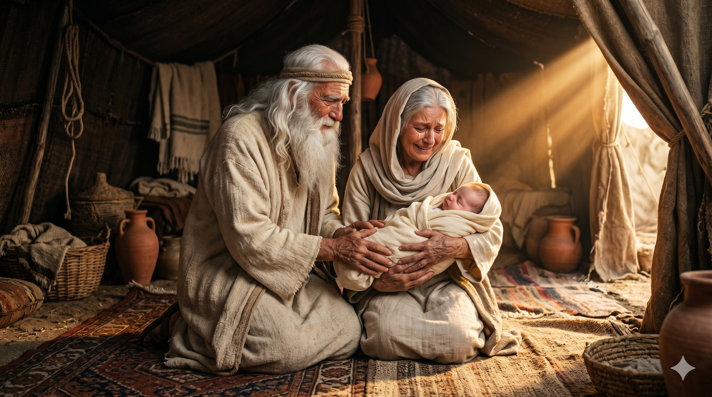
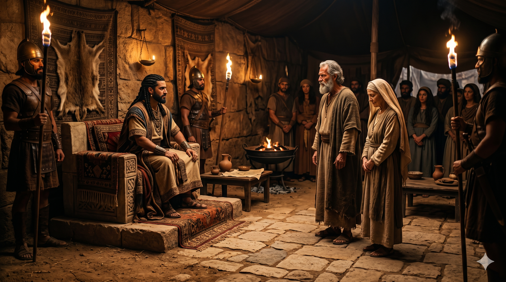
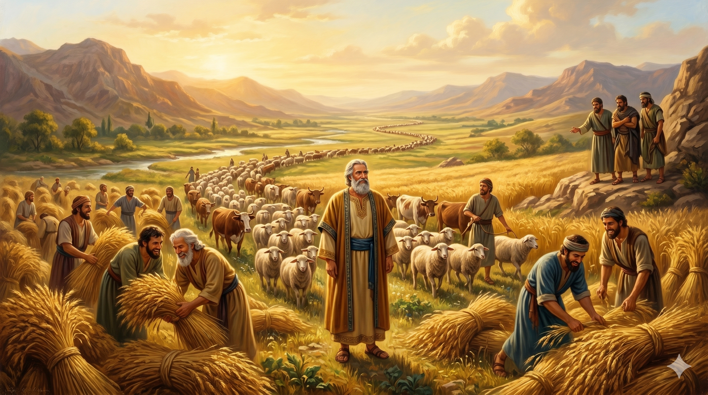
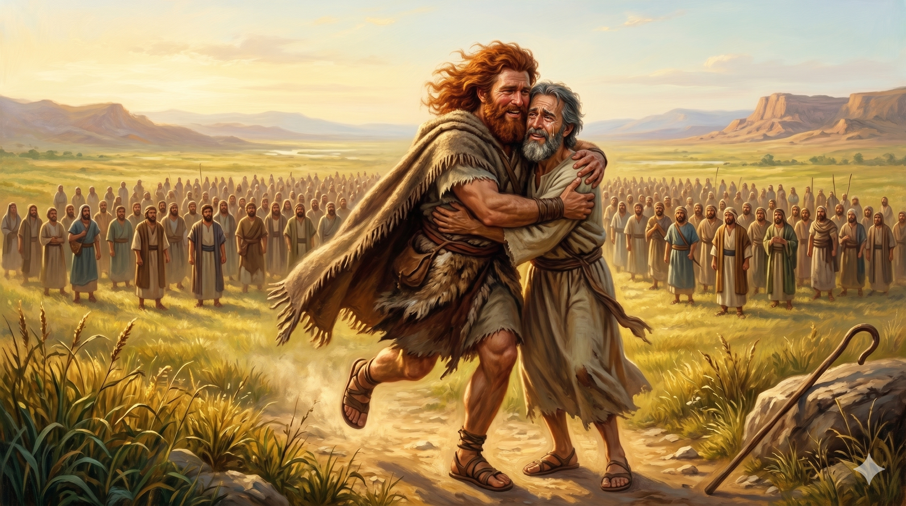
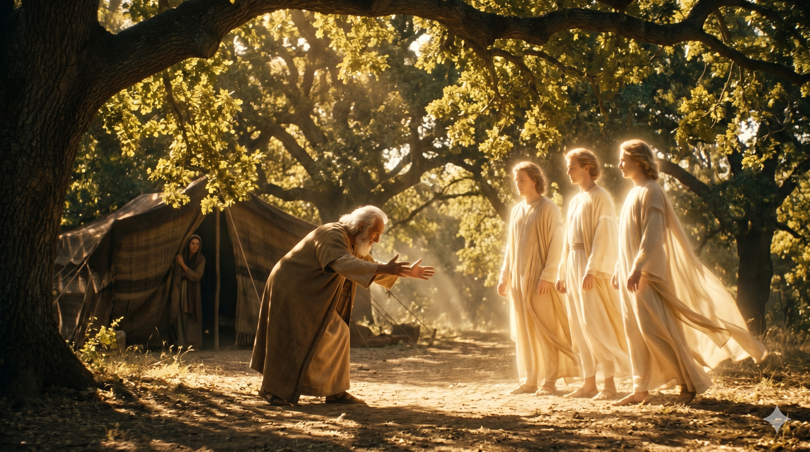
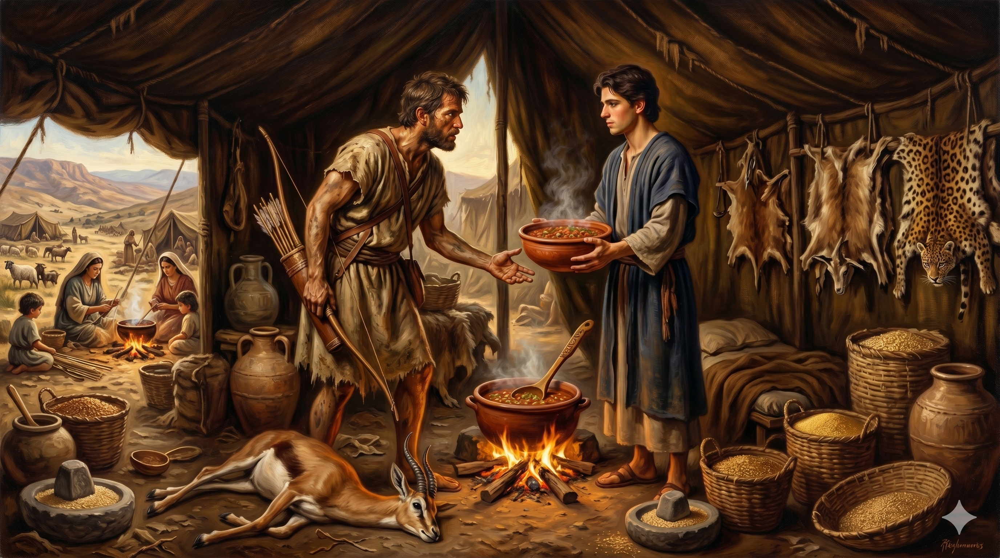
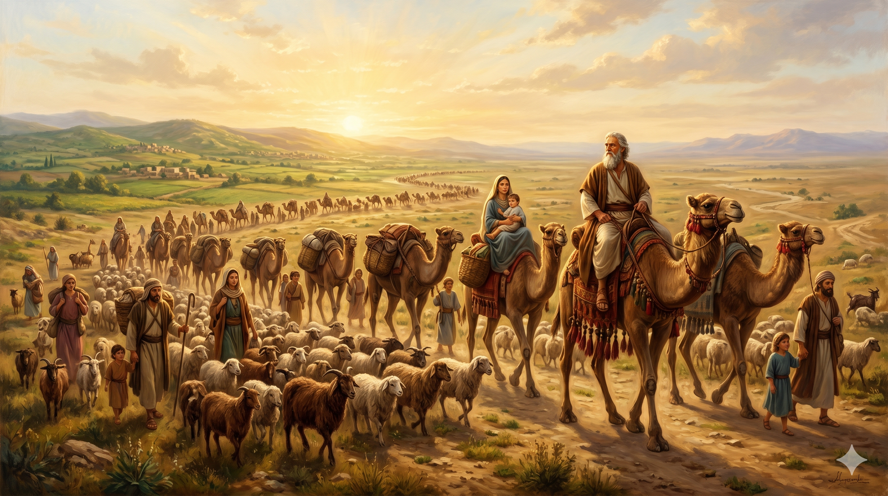
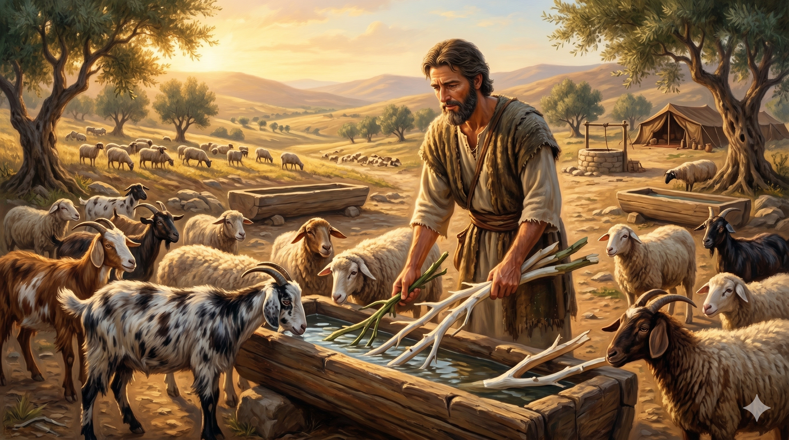

최신 묵상

이삭의 탄생 — 약속이 이루어지다
창세기 21:1–7
25년의 기다림 끝에 "말씀하신 대로" 이삭이 태어났습니다. 의심의 웃음이 경이의 웃음으로 바뀌는 순간 — 약속은 하나님의 때에 성취됩니다.
이삭이 야곱을 떠나보내다 — 아버지의 마지막 당부
창세기 27:41–28:5
속임을 당한 후에도 이삭은 야곱을 저주하지 않고 다시 축복하며 아브라함의 복을 전합니다. 부모의 참된 역할은 하나님의 부르심을 확증하는 것입니다.
요셉을 편애하다 — 야곱의 실수와 그 결과
창세기 37:1–11
편애의 고통을 누구보다 잘 알았던 야곱이 요셉에게 똑같은 죄를 반복합니다. 그러나 하나님의 섭리는 깨어진 가정을 통해서도 역사하십니다.

그랄에서 반복된 실수
창세기 20:1–18
영적 정점 직후 아브라함은 옛 거짓말을 반복합니다. 그러나 하나님은 사라를 보호하시고 여전히 "선지자"라 부르셨습니다. 은혜는 하나님의 신실하심에 근거합니다.

야곱의 속임수 — 이삭이 축복을 빼앗기다
창세기 27:1–40
편애와 속임수로 얼룩진 이삭의 장막, 그러나 하나님의 주권적 계획은 깨어진 조각들을 통해 이루어집니다 — "그가 반드시 복을 받을 것이니라."
벧엘로 돌아오다 — 언약의 갱신
창세기 35:1–15
30년 만에 하나님이 야곱을 벧엘로 부르십니다. 우상을 묻고 옷을 갈아입은 후, 첫사랑의 자리에서 언약이 새롭게 됩니다.

소돔을 위한 중보기도 — 중보자의 마음
창세기 18:16–33
소돔의 멸망 앞에 선 아브라함이 50명에서 10명까지 여섯 번 하나님께 탄원합니다. 중보기도는 하나님의 마음과 나의 마음이 일치되는 협력입니다.

번영과 시기 — 하나님이 복을 주시다
창세기 26:12–16
기근 속에서도 순종한 이삭은 백 배의 수확을 거둡니다. 그러나 번영은 시기를 불러왔고, 우물은 막히고 떠나라는 명을 듣습니다. 하나님의 복은 세상이 결코 막을 수 없습니다.

에서와의 화해 — 두려움이 은혜로
창세기 33:1–20
야곱이 두려워했던 형은 달려와 그를 끌어안았습니다. 야곱이 떨고 있는 동안 하나님은 이미 에서의 마음을 준비하셨고, 용서의 얼굴은 하나님의 얼굴이 되었습니다.

세 천사의 방문 — 웃음의 사라
창세기 18:1–15
마므레 상수리나무 아래 아브라함을 찾아온 세 명의 손님. 아들을 약속하신 하나님, 그리고 의심의 웃음이 아이의 이름(이삭)이 되기까지.
그랄에서 반복된 실수 — 아버지의 길을 걷다
창세기 26:1–11
다시 찾아온 기근. 그랄로 내려간 이삭은 아내를 누이라 속이며 아버지의 실수를 반복합니다. 인간의 실패 속에서도 하나님의 보호는 계속됩니다.
얍복강의 씨름 — 이스라엘이 되다
창세기 32:22–32
얍복강 가에서 홀로 남은 야곱, 새벽까지 이어진 씨름. 환도뼈가 어긋나고 이름이 이스라엘로 바뀌는 순간, 쫓기던 자에서 하나님께 매달리는 자가 됩니다.
할례 언약 — 이름이 바뀌다
창세기 17:1–27
13년의 침묵 후 나타나신 하나님. 아브람은 아브라함이 되고, 할례는 언약의 표징이 됩니다. 전능하신 하나님(엘 샤다이)의 약속은 변하지 않습니다.

장자권과 팥죽 한 그릇 — 이삭 가정의 균열
창세기 25:27–34
에서는 허기를 이기지 못해 장자의 명분을 팥죽 한 그릇에 팔았습니다. 순간의 욕망이 영원한 유산을 잃게 할 수 있습니다.

라반을 떠나다 — 20년 만의 귀향
창세기 31:1–55
20년의 타향살이를 마치고 하나님의 음성을 따라 귀향하는 야곱. 라반과의 갈등, 그리고 하나님의 중재로 맺어진 언약의 화해.
하갈과 이스마엘 — 인간의 방법
창세기 16:1–16
기다림에 지친 사래가 만든 인간의 방법, 그리고 광야에서 버림받은 하갈에게 "나를 살피시는 하나님"으로 자신을 드러내신 엘 로이.
에서와 야곱의 탄생 — 태중에서 다툰 두 아들
창세기 25:19–26
20년의 기도 끝에 응답받은 이삭, 리브가의 태 속에서 다툰 두 국민, 그리고 태어나기 전에 선포된 하나님의 주권적 선택.

야곱의 지혜 — 하나님이 재물을 주시다
창세기 30:25–43
하나님을 믿지 않는 라반조차 야곱을 통해 흘러가는 복을 고백합니다. 인간의 불의가 하나님의 복을 막을 수 없습니다.
횃불 언약 — 하나님의 일방적 약속
창세기 15:1–21
두려움에 떠는 아브라함에게 나타나신 하나님, 별처럼 많은 자손의 약속, 그리고 오직 하나님만이 지나가신 횃불 언약의 신비.
리브가를 만나다 — 하나님이 예비하신 배우자
창세기 24:1–67
들에서 묵상하다 리브가를 만난 이삭. 종 엘리에셀의 기도와 하나님의 정교한 섭리가 빚어낸 아름다운 만남.
열두 아들의 탄생 — 고난 속의 번성
창세기 29:31–30:24
사랑받지 못한 레아의 눈물 위에 세워진 이스라엘의 열두 지파. 하나님은 깨어진 가정의 한가운데서 구원의 역사를 이루어 가십니다.